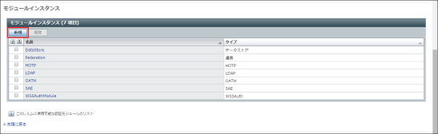

OpenAMのPersistent Cookie認証モジュールで遊んでみる
OpenAMにPersistent Cookie認証モジュールというものがある。JWT形式のCookie を使って実現されているということで、JWTという言葉が気になったという理由だけでw 遊んでみた時のメモ。
Persistent Cookie認証とは？
OpenAMの認証セッションは、通常ブラウザが起動している間だけ有効であり、 ブラウザを閉じた後にサイトにアクセスすると、再度認証画面が表示され ログインが必要となる。
Persistent Cookie認証の設定を行なうことで、一定の期間は認証状態が維持され、 ブラウザを閉じてからサイトに再アクセスした場合にも、認証画面が表示される ことなしにサイトが利用できるようになる。
実際は、認証済みセッションが維持されるのではなく、Persistent Cookie が提示された場合は、画面を出さずに認証処理を完了させ、セッションを スタートさせるという動作になっている。
Persistent Cookie認証の機能は、OpenSSOだった頃から存在していた機能 であるようだが、この機能がOpenAM 11からPersistent Cookie認証モジュールとして 提供されるようになった。Persistent Cookie認証モジュールでは、JWT形式の Cookieにセッションに関する情報を保持するようになっている。
Persistent Cookie認証を設定してみる
Persistent Cookie認証の機能は、レルムの中の認証モジュールと認証連鎖 を設定することで利用できる。 ここでは「/ (最上位のレルム)」にPersistent Cookie認証を設定してみることにする。
以降の手順は、先に書いたエントリ OpenAMとWeb Policy Agentを同じApacheインスタンスに同居させる [非公式手順] の手順で セットアップした環境で実行している。
OpenAMのキーストアの設定を行なう
Persistent Cookie認証モジュールが生成するJWTは、公開鍵で暗号化されるように なっている。JWTの暗号化、復号化に使うキーペアをOpenAMのキーストアに設定する。
新しいキーペアを生成する
新しいキーペアを、仮のキーストアに生成する。以下の例では openam-YYYYMMDD という名前 (alias) の1年間有効なキーペアを生成している。
$ keytool -genkeypair -keyalg rsa -keysize 2048 -validity 380 -keystore newkey.jks -dname "CN=openam, DC=www, DC=example, DC=com" -alias openam-20150218
Enter keystore password:
Re-enter new password:
Enter key password for <openam-20150218>
(RETURN if same as keystore password):
“Enter keystore password” と聞かれるので、16文字程度の安全なパスワードを 入力する。”Re-enter new passowrd” にも同じパスワードを入力する。
続いて “Enter key password for <openam-YYYYMMDD>” と聞かれるので、ここは 何も入力せずに [ENTER] を押す。
Note
キーペアは、一定の期間ごと (今回の例では1年毎) に更新する必要がある。 ここでは、キーペアの名前 (alias) に年月日をつけ、キーペア更新の際に キーペアを正しく選択できるようにしている。
また、キーペアの有効期間を1年と15日に設定することで、更新作業日に 15日の猶予をもたせている。
生成したキーペアの内容を確認しておく。
$ keytool -list -keystore newkey.jks -alias openam-20150218 -rfc | keytool -printcert
Enter keystore password:
Owner: CN=openam, DC=www, DC=example, DC=com
Issuer: CN=openam, DC=www, DC=example, DC=com
Serial number: 51870931
Valid from: Wed Feb 18 21:51:52 JST 2015 until: Fri Mar 04 21:51:52 JST 2016
Certificate fingerprints:
MD5: 63:C5:EF:0A:D1:C8:50:99:A8:8D:B0:33:7B:F8:DA:6E
SHA1: BC:AD:AF:4B:33:50:10:7A:E9:05:28:E3:F5:D2:9A:F4:64:B3:AA:2D
SHA256: 66:4B:8E:E4:B2:48:1A:ED:3F:F9:BA:28:C4:66:5F:FD:B2:95:47:A9:37
:8D:D2:21:3A:DF:CF:37:E8:12:84:B1
Signature algorithm name: SHA256withRSA
Version: 3
Extensions:
#1: ObjectId: 2.5.29.14 Criticality=false
SubjectKeyIdentifier [
KeyIdentifier [
0000: 02 94 81 9A F4 4E EA 5E BB 5B 77 FF 5E F1 3A 15 .....N.^.[w.^.:.
0010: 25 E4 08 CC %...
]
]
キーペアをOpenAMのキーストアにインポートする
生成したキーペアを、OpenAMが参照しているキーストアにインポートする。
$ sudo keytool -importkeystore -srckeystore newkey.jks -srcalias openam-20150218 -destkeystore /usr/share/tomcat8/openam/openam/keystore.jks
Enter destination keystore password:
Enter source keystore password:
“Enter destination keystore password”と聞かれるので、OpenAMが参照している キーストアのパスワードを入力する。デフォルトは changeit になっている。
次に “Enter source keystore password” と聞かれるので、先の手順でキーペアを 生成したときに入力したパスワードを入力する。
キーペアが正しくインポートされたことを確認しておく。
$ keytool -list -keystore /usr/share/tomcat8/openam/openam/keystore.jks -alias openam-20150218
Enter keystore password:
openam-20150218, Feb 18, 2015, PrivateKeyEntry,
Certificate fingerprint (SHA1): BC:AD:AF:4B:33:50:10:7A:E9:05:28:E3:F5:D2:9A:
F4:64:B3:AA:2D
Caution
この段階では、まだOpenAMが使うキーペアの切り替えが完了していない。 そのため、古いキーペアを消してしまわないこと。古いキーペアを消してしまうと、 XUIを使ったOpenAMへのログインができなくなる。
Tomcatを再起動する
キーストアの更新を反映するためにTomcatを再起動する。
$ sudo service tomcat8 restart
$ sudo tail -f /var/log/tomcat8/catalina.out
...
INFO: Server startup in 121156 ms
^C
OpenAMが参照するキーペアを変更する
OpenAMの管理コンソール画面で、 [アクセス制御] → [/ (最上位のレルム)] → [認証] とたどる。
コアの [すべてのコア設定...] をクリックする。
セキュリティの [組織認証の証明書のエイリアス] にキーペアの名前 (alias) openam-YYYYMMDD を入力する。

[保存] をクリックする。
Caution
ここで入力する名前に誤り（誤字・脱字など）があると、OpenAMでログインが できなくなるため、慎重に作業を行なう。
Persistent Cookie認証モジュールを設定する
OpenAM Administration Guideの 2.3.18. Hints for the Persistent Cookie Module を参考にしながらPersistent Cookie認証モジュールを設定していく。
Persistent Cookie認証のモジュールインスタンスを追加する
OpenAMの管理コンソール画面で、 [アクセス制御] → [/ (最上位のレルム)] → [認証] とたどる。
モジュールインスタンスの [新規] をクリックする。
「名前」に PersistentCookie と入力し、 「タイプ」で [持続Cookie] を選択して、[了解] をクリックする。
Persistent Cookie認証を行なう認証連鎖を定義する
「(最上位のレルム) - 認証」の画面で、認証連鎖の [新規] をクリックする。
「名前」に PersistentCookieAuthService と入力し、[了解] をクリックする。
[追加] ボタンをクリックして認証モジュールを追加し、以下のような 設定にする。
| インスタンス | 条件 | オプション |
| PersistentCookie | 十分 | (空欄) |
| DataStore | 必要 | (空欄) |
同じ画面の「認証ポストプロセスクラス」に org.forgerock.openam.authentication.modules.persistentcookie.PersistentCookieAuthModule を追加する。
[保存] をクリックして設定を保存し、[認証へ戻る] をクリックする。
認証をPersistent Cookie認証に切り替える
「(最上位のレルム) - 認証」の画面の 「組織認証設定」で [PersistentCookieAuthService] を選んで、 [保存] をクリックする。
動作確認
Persistent Cookie認証の設定ができたので、動作を確認してみる。
動作確認用にセットアップしたサーバは https://www1.example.com/ と なるようにしている。テストユーザとして “test0001” を作っている。
ログイン⇒ブラウザ閉じる⇒再アクセス
https://www1.example.com にアクセスする。
OpenAMの認証画面が表示される。
ログインすると、コンテンツが表示される。
ブラウザをいったん閉じて、立ち上げなおす。その後、 https://www1.example.com にアクセスする。
ブラウザがOpenAMの認証画面にリダイレクトされるが・・・
そのまま再度リダイレクトされ、コンテンツが表示される。
認証後にセットされているCookieの確認
ブラウザのデベロッパーツールでCookieを覗いてみる。
セッション用のCookieである “iPlanetDirectoryPro” と、ロードバランス用の Cookieである “amlbcookie” がブラウザが開いている間だけ有効なCookieとして 発行されている。Persistent Cookieである “session-jwt” が、期限付きの Cookieとして発行されている。
Note
iPlanetDirecotryPro と amlbcookie について、httponly, secure 属性が on になっていないのは、実験用に用意した環境の OpenAM で該当する 設定をしていないという理由によるもの。
サーバを2台用意して実験してみる
サーバをもう一台、https://www2.example.com/ となるように準備してみる。 設定するキーペアは www1 と同じものを設定し、テストユーザも www1 と同じ “test0001” を作っておく。
https://www1.example.com にアクセスする。
OpenAMの認証画面が表示される。
ログインすると、コンテンツが表示される。
ブラウザをいったん閉じて、立ち上げなおす。 今度は https://www2.example.com にアクセスする。
リダイレクトが2回行なわれて、コンテンツが表示される。
サーバを2台用意して実験してみる(その2)
今度は https://www1.example.com にアクセスした後、ブラウザを閉じずに、 そのまま https://www2.example.com にアクセスしてみる。
そうすると、次のようなエラーが表示される。

細かなロジックは不明であるが、OpenAMが認識していない無効なセッション値を 持っているためにエラーとしているものと考えられる。
セッション用のCookie “iPlanetDirectoryPro” を消して再アクセスしなおすと、 コンテンツが正しく表示される。
authenticateエンドポイントを直接叩いてみる
Persistent Cookie (session-jwt) がある状態でコンテンツにアクセスすると、 いったんOpenAMにリダイレクトされる。このとき OpenAM の XUI の中で、 authenticateエンドポイントにアクセスをして認証処理を行なっている。
直接 authenticate エンドポイントを叩いて反応を見ておこう。
$ curl -D - --data "" --cookie "session-jwt=eyAidH...ZgImw" http://localhost:80
80/openam/json/authenticate
HTTP/1.1 200 OK
Set-Cookie: amlbcookie=01; Domain=.example.com; Path=/
Set-Cookie: session-jwt=eyAidH...p_Zig; Domain=.example.com; Expires=Thu, 19-Fe
b-2015 17:43:22 GMT; Path=/; Secure; HttpOnly
Content-API-Version: protocol=1.0,resource=2.0
Date: Thu, 19 Feb 2015 12:52:16 GMT
Accept-Ranges: bytes
Server: Restlet-Framework/2.1.7
Vary: Accept-Charset, Accept-Encoding, Accept-Language, Accept
Cache-Control: no-cache, no-store, must-revalidate
Pragma: no-cache
Expires: 0
Content-Type: application/json;charset=UTF-8
Content-Length: 139
{"tokenId":"AQIC5w...MzE5*","successUrl":"/openam/console"}
“session-jwt” をCookieに設定して、authenticateエンドポイントにPOST リクエストを送ると、Persistent Cookieを使った認証処理が行なわれる。
認証が成功すると、JSONの “tokenId” 属性でセッションIDが返される。 この値がセッション用のCookie “iPlanetDirectoryPro” にセットされている 値になっている。
そして、認証が成功したときには、新しい “session-jwt” が生成されて Set-Cookieされるようにもなっている。
所感
Persistent Cookie認証を使うと、クラウドサービスによくあるログイン状態を 保ってくれるタイプのサイトをOpenAMで構成することができる。
しかしそれだけではなく、2台のサーバ間で同一のPersistent Cookie (session-jwt) を使って、同じように認証を振舞わせることができる点が興味深い。
JWT... いろんな想像を掻き立てさせる。(つづく)